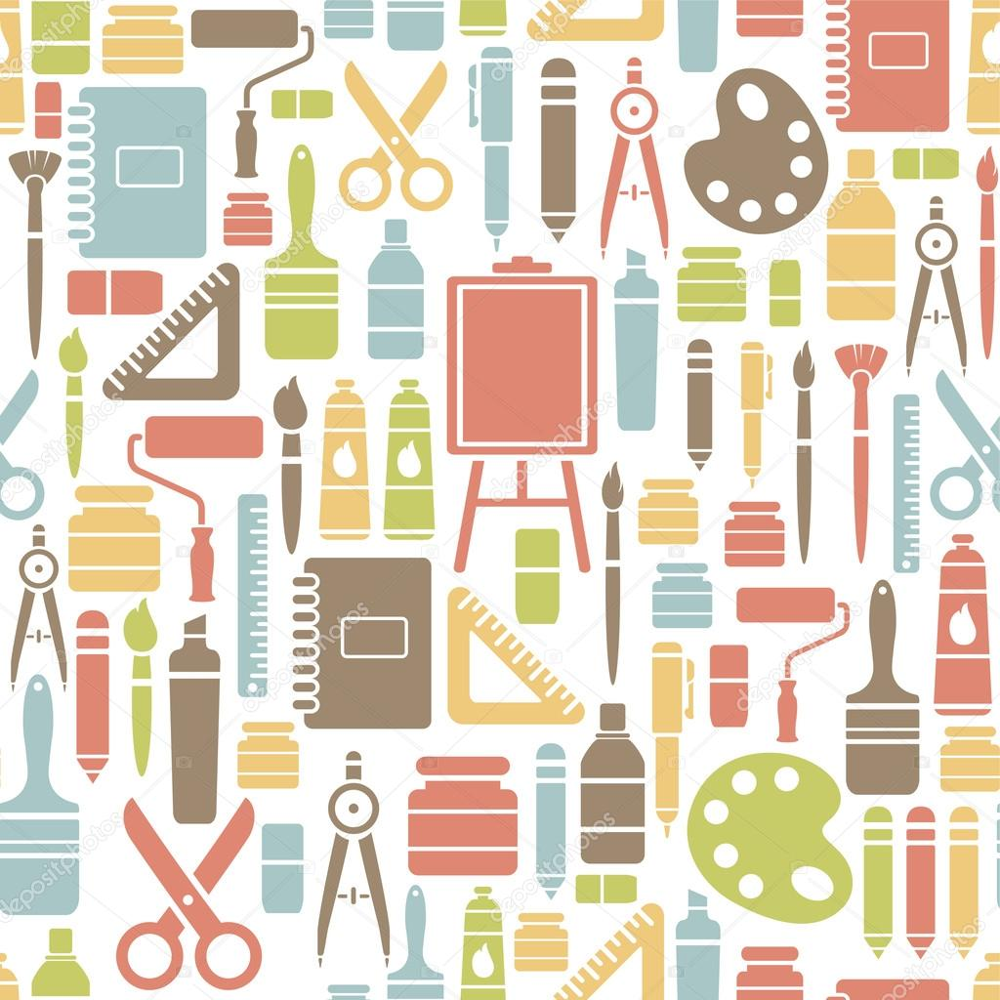
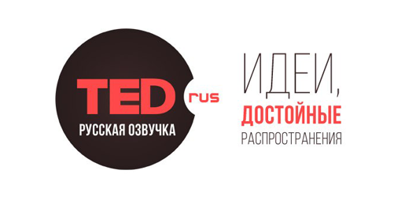
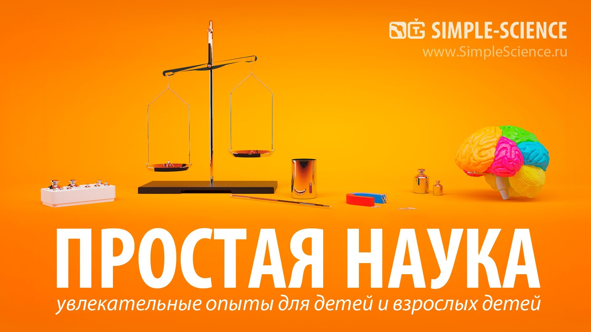
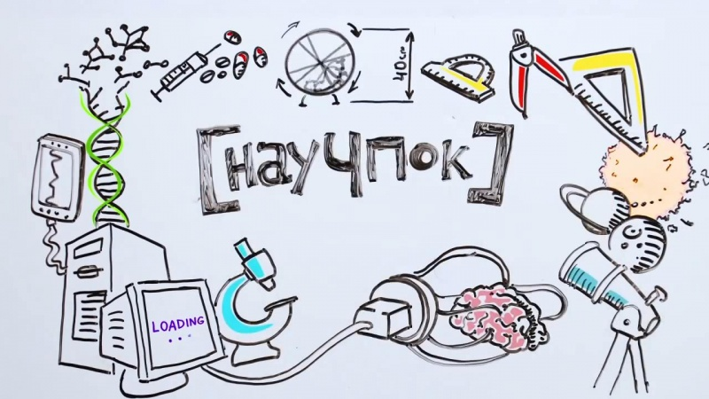

Освітні канали на YouTube
Способів пізнавати навколишній світ і вчитися чомусь новому безліч. Один з простих, а найголовніше, безкоштовних - переглядати цікаві освітні ролики на каналах YouTube.

кращі навчальні уроки, як для новачків, так і для професіоналів
Способів пізнавати навколишній світ і вчитися чомусь новому безліч. Один з простих, а найголовніше, безкоштовних - переглядати цікаві освітні ролики на каналах YouTube.
вчені розповідають про часто практично невідомі речі, а часом - про популярні.


канал відомогопопулярізатора науки серед дітей Дениса Мохова показує ролики з експериментами в області фізики і хімії, які будуть цікаві не тільки дітям./

відео являють собою мальовану анімацію, що доступно розкриває той чи інший факт з розповідями практично на будь-яку тему.